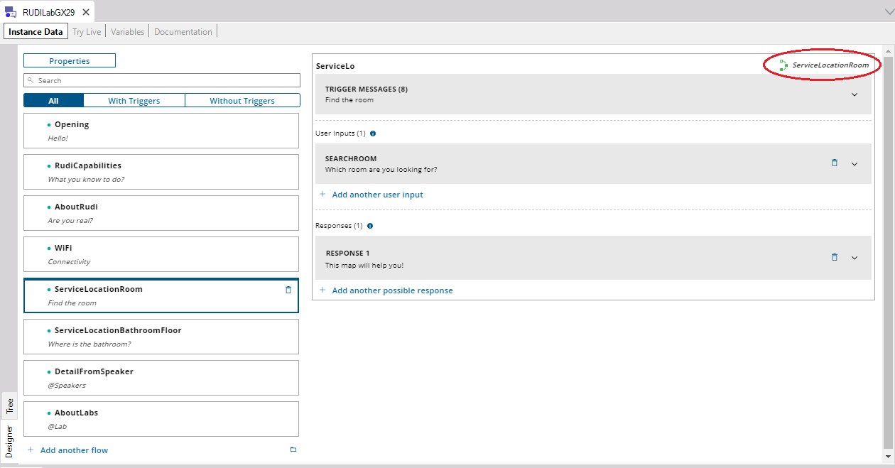

Conversational Flows Designer
The Designer mode of the Conversational Flows Editor provides an intuitive way to add and edit all the parts of a Conversational Flows object in order to create a Chatbot. It is available by clicking on the Designer tab at the bottom of the Editor. At the left of the pane, you have all the Flows of the Conversation Flows object, which can be easily added through the "Add another flow" option.  Selecting a Flow shows its configuration on the right. There, you can view and edit the Trigger Messages of the Flow, as well as add, delete or edit the User Inputs and the Responses of the Flow. As the following figure shows, each can be expanded to see their details. For example, for the User Input of the Flow, you can edit the Ask Messages and see more details using the Advanced mode.
Take a look at the Advanced mode, where you can edit the Required Conditions of the User Input, the Validation Procedure and other information related to the User Input configuration.
AvailabilitySince GeneXus 17. |


| Backlinks |
| Conversational Flows Editor |